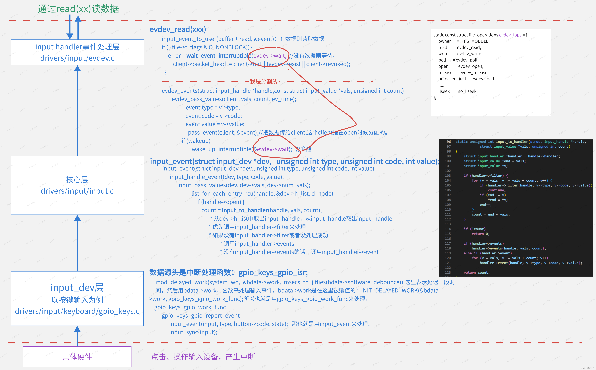

本文参考了CSDN博主「陈 洪 伟」的原创文章
原文链接：https://blog.csdn.net/u013171226/article/details/133985487
1、前言
输入子系统提供了一种通用的机制，用于处理各种输入设备，如键盘、鼠标、触摸屏等。
换句话说，就是将大部分的输入设备抽象出一个公共层出来，方便应用层使用
2、输入子系统层次结构
2.1事件处理层：input_handler
- 事情处理层主要是负责将输入事件上报到应用程序；对于已经向内核输入子系统注册的输入设备，在sysfs中创建设备节点，应用程序通过操作设备节点来获取输入事件。
- 事件处理层将输入事件划分为几大类，比如：通用事件(event)、鼠标事件(mouse)、摇杆事件(js)等等，每个输入类设备在注册时需要指定自己属于哪个类；
- 通用事件是能和任何输入设备匹配上的，意味着只要注册一个输入类设备就会sysfs就会创建对应的
/dev/input/eventn设备节点；
2.2 核心层：input_handle
承上启下。为设备驱动层提供了规范和接口；通知事件处理层对事件进行处理；事件处理层和设备驱动层都必须先向核心层注册，然后才能工作；
-
- 申请主设备号
- 提供input_register_device跟input_register_handler函数分别用于注册device跟handler;
- 提供input_register_handle函数用于注册一个事件处理，代表一个成功配对的input_dev和input_handler;
2.3 驱动层：intut_dev
把硬件产生的事件转换为核心层定义的规范提交给事件处理层。
3、关键数据结构
3.1 input_handler
- 即事件处理驱动，在内核启动过程中会向核心层注册handler；
struct input_handler { |
3.2 input_handle
struct handle连接了输入设备 (input_dev) 和事件处理驱动(input_handler)。有了handle之后，设备上报输入事件时才知道该往哪些事件处理驱动上报；
struct input_handle { |
3.3 input_dev
- 每个输入设备都有一个
input_dev，用来抽象一个输入设备。
struct input_dev { |
3.4 input_dev、input_handler、input_handle三者的关系
- input_handle结构体是用于记录匹配上的输入设备和事件处理驱动的，当设备驱动和事件处理驱动匹配上时就会新建一个handle并向核心层注册；
- input_dev结构体中有h_list链表，里面记录的是设备对应的handle结构体
- input_handler结构体中有h_list链表，里面记录的是设备对应的handle结构体；
- handle结构体里的d_node是记录匹配上的input_dev结构体，h_node是记录的handler结构体；
- 如果知道handle结构体，可以通过d_node链表找到对应的input_dev结构体，通过h_node链表找到对应的handler结构体；
- 如果知道input_dev结构体，可以通过h_list链表找到handle结构体，再通过handle结构体的h_node链表找到匹配的handler结构体；
- 如果知道handler结构体，可以通过h_list链表找到handle结构体，再通过handle结构体的d_node链表找到匹配的input_dev结构体；
总结：三个结构体通过链表互相关联，只要知道其中一个就能通过链表找到另外两个；
4、input子系统驱动框架分析
如上图所示为输入子系统的设备层，核心层和处理层之间的关系，当我们用input_register_handler 函数添加handler的时候，会将其添加到input.c里面的一个链表中，同样当我们用input_register_device添加input_dev的时候，会将其添加到input.c的input_dev链表中，然后无论是我们添加handler还是添加device，内核都会对两者进行match，当发现某个device和handler相匹配的时候，就会调用handler里面的connect函数，然后再connect函数里面去申请input_handle结构体，这个input_handle结构体里面保存着匹配的input_handler和input_dev。
4.1 怎么添加input_dev
接下来将分别看一下我们怎么添加input_dev也就是上图中的左下角的input_dev是怎么被添加上的，然后再看一下右边connect函数内部的细节。
上图是以内核中的按键输入驱动为例，看一下是怎么添加input_dev的，从左边可以看到，首先我们编写设备树文件，然后设备树文件会被解析成platform_device，然后利用函数of_device_add添加到platform_bus_type的设备链表中，然后我们还会编写一个platform_driver驱动结构体，然后利用platform_driver_register函数将驱动注册内核中，无论我们添加驱动还是添加设备，内核都会去对设备和驱动进行匹配，匹配成功后就会调用驱动结构体里面的probe函数，也就是上图中的gpio_keys_probe函数，然后在probe函数中ongoing会申请input_dev结构体，并且利用input_register_device函数将设备注册到input系统的设备链表中。
上图是以内核中的I2C接口的触摸屏驱动为例，看一下怎么添加input_dev的，这个图和前面的按键那个图类似，注意区别就是，对于i2c设备来说，它是挂载i2c_bus_type上面的不是platform_bus上的，其他的地方是类似的，就不再赘述了。
这里需要补充的一点是在connect函数中还有一个gtp_request_irq(ts);函数，这里是申请中断的，然后进一步调用了ret = request_threaded_irq(ts->client->irq, NULL,gtp_irq_handler,ts->pdata->irq_flags | IRQF_ONESHOT,ts->client->name,ts);函数，这里设置了中断处理函数是gtp_irq_handler，在gtp_irq_handler函数里面就是真正读取触摸屏数据的最底层的硬件函数了，里面就是调用i2c_transfer函数读取数据的了。
4.2 input_dev和input_handler匹配后，connec函数做了什么
前面看了怎么把input_dev添加到内核中，接下来看一下当input_dev和input_handler匹配后调用connect函数内部的细节，上图就是connect函数内部细节流程，
在connect函数里面我们可以猜一下，无非就是分配、设置、注册结构体，具体看一下里面，首先是申请了一个evdev结构体，然后我们可以看到这个evdev结构体里面又包含了input_handle结构体，然后这个input_handle结构体里面有两个重要成员就是input_dev和input_handler,这两个就是用来保存匹配的input_dev和input_handler的；
再往下可以看到list_add_tail_rcu(&handle->d_node, &dev->h_list);和list_add_tail_rcu(&handle->h_node, &handler->h_list);，这两个函数的意思就是把handle又分别保存到了input_handler和input_dev的链表中了。
再往下就是注册字符设备驱动程序，其中包含一个file_operations结构体，那么当应用程序调用open/read/write函数的时候就会调用这里的file_ops结构体里面的函数。
5、 input子系统读数据流程
接下来我们看一下读取input输入事件数据的流程，先看一下open的流程。
5.1 open输入设备流程
上图就是open打开输入设备的流程，当我们调用open函数时，进一步会调用evdev_fops结构体里面的evdev_open函数，这个函数里面首先申请一个client，这个client就对应着我们的用户程序，然后会将这个client和evdev进行绑定，也就是把用户和输入设备绑定了。
5.2 read读取输入事件流程

如上图所示是read流程，先从最上面开始看，当应用程序调用read函数时，进一步会调用到evdev_read函数，然后在evdev_read函数中，如果有数据那么直接读取，如果没有数据，那么休眠等待。
好了，接下来再从图的最下面往上看，前面说了没数据就休眠，然后过一会硬件输入设备被操作了或者被按下了，然后就会产生中断，这时候就会进入中断处理函数，然后就会利用处理函数gpio_keys_gpio_work_func进行处理，然后这个函数一层层看下去最终就是调用input_event上报输入事件。
然后input_event其实就是核心层了，然后看一下input_event函数做了什么，这个函数一层层调用最终是调用到了input_to_handler函数，这个函数的源码大体可以看到，如果input_handler定义了filter就用filter函数处理，如果定义了input_handler->events函数那就用events函数处理，这里就是用events处理的。
那么这时候就去看input_handler->events函数，这个函数里面利用__pass_event(client, &event);把数据传给client,这个client是在open时候分配的。然后唤醒前面休眠的程序，这时候evdev_read函数就会被唤醒，然后读取输入事件。
至此，输入事件的read过程结束。